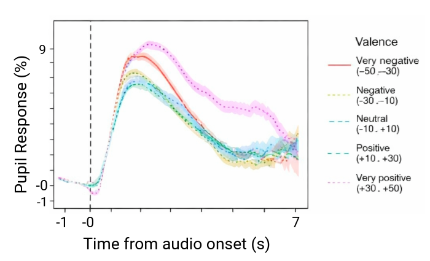
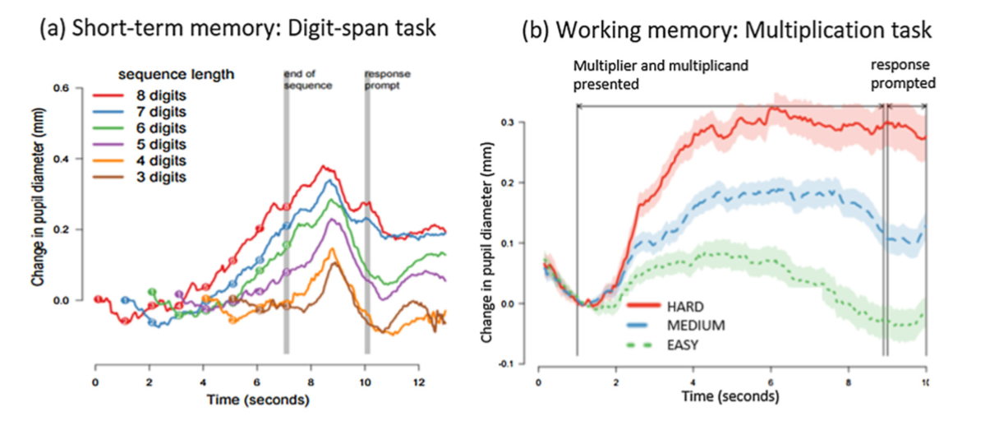

Metodi di Psicofisiologia e Neuroimaging nella Clinica e nelle Neuroscienze Cognitive
Pupillometry
What is the pupil?
Why study the pupil:
- visible & measurable
- dynamically controlled
- tightly linked to brain state
Pupillometry provides a fast, non-invasive window into autonomic and cognitive processes. What the pupil is:
- the
variable openingin the center of the iris - regulating the amount of light entering the eye
It functions like the aperture of a camera.

Two muscles control pupil size:
Sphincterpupillae → constrictionDilatorpupillae → dilation
These muscles are controlled by different branches of the autonomic nervous system.
Pupillary Control
Parasympathetic (ACh) pathway:
- Retina
- Pretectal nucleus
- Edinger–Westphal nucleus
- Oculomotor nerve (III)
- Ciliary ganglion
- Sphincter muscle
This mediates the pupillary light reflex (PLR).
Sympathetic (NE) pathway:
- Hypothalamus
- Spinal cord (ciliospinal center)
- Superior cervical ganglion
- Dilator muscle
This mediates pupil dilation in darkness, stress, and arousal.

Central neuromodulation
Beyond reflexes, pupil size is influenced by:
- noradrenergic signaling
- cortical control systems
- attention networks
The locus coeruleus:
- regulates arousal
- responds to novelty and uncertainty
- influences sympathetic activity
Pupil dilation is correlated with LC activity.

Types of Pupillary phenomena


